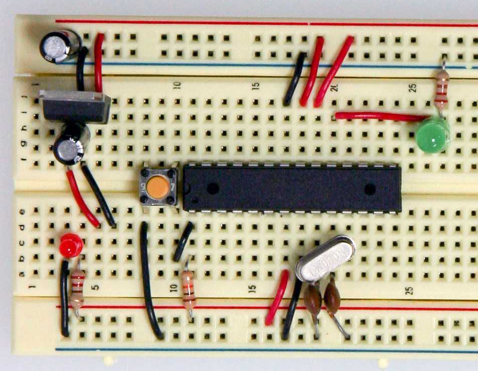

Entry #1: I don't really know how to code in all honesty, and most of these things are really confusing. However, this class is really fun and so far, not too complex. We had a competition to get a marble in a jar by moving it through plastic pipes. We weren't allowed to touch the marble and it had to always be moving.
Entry #2: Today we worked on our Rube Goldburg project and we had to scrap a fair amount of our CAD since we started to fall behind in the physical building process. I think it was better that way because some of the CAD elements didnt actualy work. We originally had a see-saw element and a funnel, but the see-saw was too much to handle. And the funnel was tricky to cut and implement, but even after successfully adding it to our design, we decided not to use it.
Entry #3: We finished our RG project and ours actually worked properly. We ended and did a challenge where we had to design the letter E. I made my dimensions impossible to create, and Dominic had a WONDERFUL time with it.
Entry #4: We started and finished making a robotic hand to pick up a cup. It was made out of cardboard, string, and rubber bands. Our team had a really solid design but the fingers were over-designed and there were easier ways to get the same result.
Entry #5: This week we started our bottle rocket project. Our group's CAD got finished pretty quickly and, like always, it looked pretty good. The actual build got finished quickly too, since we had 5 people in our team.
Entry #6: We finaly launched our bottle rockets today. Our team's rocket was made of a Minute Maid bottle and it actualy went far in comparison to the other rockets. A couple of the rockets turned around and flew backwards toward our class. It was pretty fun.
Entry #7 Today we attempted to filter dirty water. We were only given cotton, bottles, dirt, sand and rocks. We had a couple methods to use and started by layering the cotton, then lots of sand, then small rocks, then finally big rocks.
Entry #8 Today we started our electical engineering unit and we worked with bread boards. The electrical currents and flow were completey new topics for me. I would like to say nothing exploded, but our first LED light sparked violently when we plugged each side into a diffrent current.
Entry #9 Today we finished and pitched our buisness. We learned about how a project is managed and how busnisses are funnded. The idea that we had to pitch to the class was a blue tooth basketball. It wasnt the greatest idea but the pitch went well anyway.
 <
<